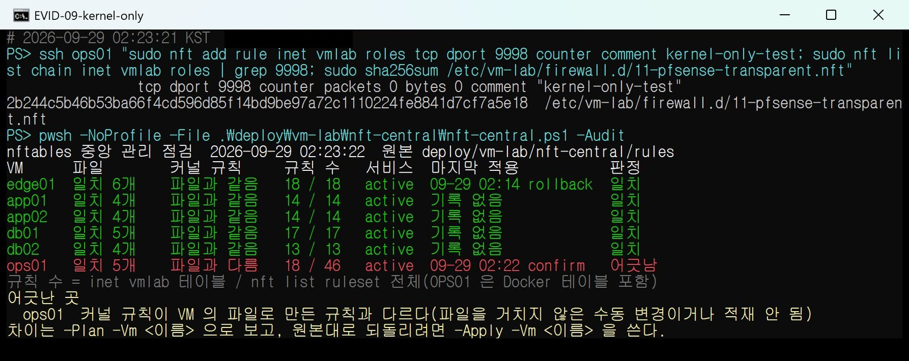
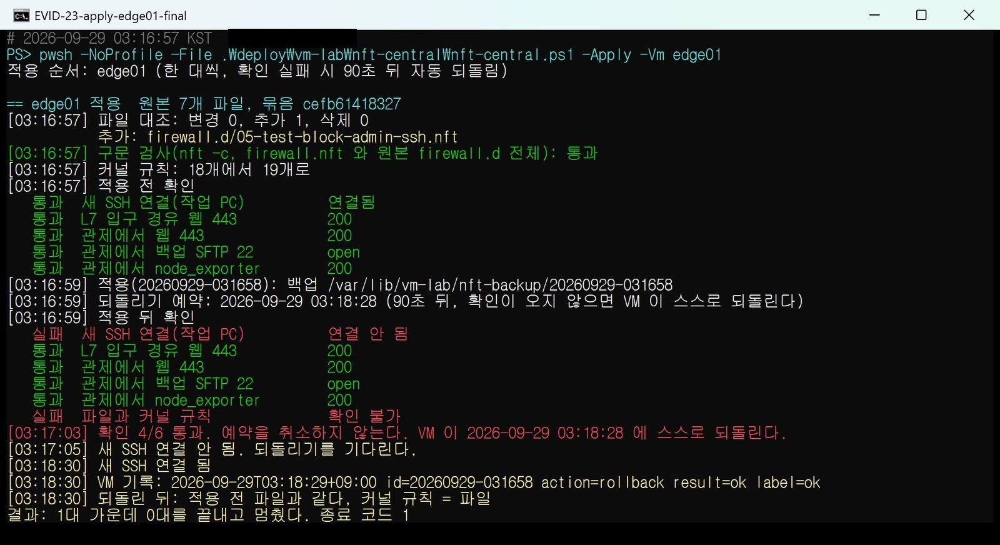

· 방화벽 · VM 실습망 · failstop
nftables 규칙 중앙 관리와 90초 자동 되돌리기
VM 실습망 여섯 대의 호스트 방화벽(nftables) 규칙을 저장소의 원본 파일 하나로 맞추는 도구를 만들었습니다. 원격 서버의 방화벽을 바꾸다 보면 SSH가 끊겨 되돌릴 방법이 없어지는 경우가 생깁니다. 그래서 적용 전에 VM 안에 되돌리기 타이머를 먼저 걸어 두고, 작업 PC의 확인이 오지 않으면 VM이 90초 뒤 스스로 원래 규칙으로 돌아가게 했습니다.
- 환경
- VM 실습망 여섯 대(Rocky Linux 10.2, nftables 1.1.5, systemd 257, SELinux enforcing), 작업 PC의 PowerShell 7 + OpenSSH
- 도구
nft-central.ps1(작업 PC) +nft-central-remote.sh(ssh로 보내 VM에서 root로 실행)- 결과
- 파일 밖 커널 변경 탐지, 문법 오류 적용 거부, 확인 실패 적용은 VM이 91초 뒤 되돌림(그동안 웹 73회 모두 200)
- 관련 작업
- failstop
관리 대상
각 VM의 방화벽은 table inet vmlab 하나입니다. /etc/vm-lab/firewall.nft가 테이블을 비우고 기본 체인(input·forward 기본 차단)을 만든 뒤, firewall.d/*.nft를 이름 순서로 불러 역할별 규칙을 붙입니다. 부팅 때는 vm-lab-firewall.service가 같은 파일을 올립니다. 도구는 이 파일들을 저장소의 rules/<vm>/에 원본으로 두고(여섯 대 28개 파일), 네 가지 동작을 제공합니다. -Pull은 기준선 가져오기, -Audit는 여섯 대 점검표, -Plan은 적용하면 바뀔 차이, -Apply는 한 대씩 배포입니다. pfSense와 OPS01의 Docker 테이블은 건드리지 않습니다.
파일 해시가 같아도 규칙은 다를 수 있다
파일만 비교하면 누군가 nft add rule로 커널에 직접 넣은 규칙은 보이지 않습니다. 그래서 VM의 파일을 빈 네트워크 이름공간에 실제로 올려 본 결과와 지금 커널 규칙을, 카운터를 뺀 형태(nft -s list table inet vmlab)로 글자 단위 비교합니다. 원본 디렉터리를 /etc/vm-lab 자리에 bind mount로 겹쳐 보이게 하므로 호스트의 파일과 규칙은 바뀌지 않습니다. 같은 방식으로 --net 없이 nft -c를 돌리면 새 원본 전체의 구문 검사가 됩니다.
# nft-central-remote.sh
in_view() { # in_view <원본 디렉터리> <명령> [unshare 인자...]
local dir=$1 cmd=$2
shift 2
unshare --mount "$@" -- sh -c 'mount --bind "$1/firewall.nft" /etc/vm-lab/firewall.nft &&
mount --bind "$1/firewall.d" /etc/vm-lab/firewall.d && eval "$2"' sh "$dir" "$cmd" < /dev/null
}
check_syntax() { in_view "$1" 'nft -c -f /etc/vm-lab/firewall.nft'; }
render_text() { in_view "$1" 'nft -f /etc/vm-lab/firewall.nft && nft -s list table inet vmlab' --net; }
live_text() { nft -s list table inet vmlab; }OPS01에서 파일을 거치지 않고 커널에만 카운터 규칙 하나를 넣어 봤습니다. 파일 sha256은 그대로인데 점검표는 OPS01의 커널 규칙을 '파일과 다름'으로 잡았습니다. 이어서 -Apply -Vm ops01로 원본대로 되돌렸습니다. 범위 밖 포트(tcp dport 99999)를 넣은 원본은 VM의 nft -c가 Service out of range로 실패해, 파일과 규칙을 건드리기 전에 멈췄습니다.

되돌리기를 먼저 예약하고 적용한다
-Apply는 한 대씩 원본 검사 → VM 구문 검사 → 적용 전 확인 → 백업과 되돌리기 예약 → 설치·적재 → 적용 뒤 확인 순서로 진행합니다. 적용 전 확인에서 이미 실패하는 항목이 있으면 적용하지 않습니다. 적용 뒤 실패가 이번 변경 때문인지 원래 있던 문제인지 섞이지 않게 하려는 것입니다.
핵심은 설치보다 예약이 먼저라는 점입니다. 지금 파일과 nft list ruleset 사본을 백업 디렉터리에 남긴 뒤 systemd-run --on-active=90으로 일회성 타이머 유닛을 겁니다. 스크립트는 set -euo pipefail로 돌기 때문에 예약이 실패하면 설치까지 가지 않습니다. 설치는 nft -f 한 번으로 하는데, 이 파일이 테이블 비우기와 새 규칙 적재를 한 트랜잭션에 담고 있어 규칙이 빈 순간이 생기지 않습니다.
# nft-central.ps1
$RollbackSeconds = 90
# nft-central-remote.sh, cmd_apply 중
# 3. 되돌리기를 먼저 예약한다. 예약이 서지 않으면 set -e 로 여기서 멈추고 설치하지 않는다.
systemd-run --quiet --unit="$unit" --on-active="$NC_ROLLBACK_SEC" \
--timer-property=AccuracySec=1s --timer-property=RemainAfterElapse=no \
--description="nft-central 자동 되돌리기 $NC_ID" /usr/bin/bash "$b/rollback.sh" "$b"
printf '@backup %s\n' "$b"
printf '@rollback-at %s\n' "$(date -d "+$NC_ROLLBACK_SEC sec" '+%F %T')"
# 4. 설치하고 flush 와 적재를 한 트랜잭션으로 올린다. 이미 맺은 연결의 conntrack 은 그대로라 established 는 끊기지 않는다.
install_stage
…
if $ok && ! out=$(nft -f "$ETC/firewall.nft" 2>&1); then ok=false; fi타이머가 실행하는 rollback.sh와 작업 PC가 보내는 확인(confirm)은 같은 백업 디렉터리 아래 decided를 mkdir로 만들려고 경쟁합니다. mkdir는 원자적이라 먼저 만든 쪽만 진행합니다. 확인이 타이머 만료와 거의 동시에 도착해도 되돌리기와 확인이 둘 다 실행되는 일은 없습니다.
# rollback.sh (적용 때마다 백업 디렉터리에 쓴다)
b=$1
# 확인(confirm)과 되돌리기 가운데 decided 를 먼저 만든 쪽만 진행한다. mkdir 는 원자적이다.
mkdir "$b/decided" 2> /dev/null || exit 0
ok=true
rm -f -- /etc/vm-lab/firewall.d/*.nft || ok=false
for f in "$b"/files/firewall.d/*.nft; do cp -p -- "$f" /etc/vm-lab/firewall.d/ || ok=false; done
cp -p -- "$b/files/firewall.nft" /etc/vm-lab/firewall.nft || ok=false
label=ok
restorecon -F /etc/vm-lab/firewall.nft /etc/vm-lab/firewall.d/*.nft || label=fail
if $ok && nft -f /etc/vm-lab/firewall.nft; then result=ok; else result=fail; fi
printf '%s id=%s action=rollback result=%s label=%s\n' … >> /var/log/vm-lab/nft-central.log
# cmd_confirm: 확인이 모두 통과했을 때 작업 PC 가 부른다
if ! mkdir "$b/decided" 2> /dev/null; then
echo '@confirm too-late'
…
fi
systemctl stop "nft-central-rollback-$NC_ID.timer" 2> /dev/null || …SELinux enforcing 환경이라 되돌린 파일의 라벨은 restorecon으로 복구합니다. 라벨 복구가 실패해도 규칙은 되돌리고, 그 결과는 기록의 label=에 따로 남깁니다.
EDGE01에서 확인을 일부러 실패시켰다
웹 진입 서버(EDGE01)에 작업 PC(192.168.56.1)에서 오는 새 SSH만 reject with tcp reset하는 시험 규칙을 관리 SSH 허용보다 앞에 붙였습니다. 적용 뒤 확인 여섯 개 가운데 '새 SSH 연결'과 '파일과 커널 규칙'이 실패해 4/6이 되고, 도구는 예약을 취소하지 않고 기다립니다. 작업 PC가 VM에 새로 접속할 수 없는 상태에서도 VM은 예약 시각에 스스로 되돌렸습니다.

# EDGE01 적용 기록과 journald (03:20:07 조회)
2026-09-29T03:16:59+09:00 id=20260929-031658 action=apply result=pending … rollback_in=90s
2026-09-29T03:18:29+09:00 id=20260929-031658 action=rollback result=ok label=ok
2026-09-29T03:16:58+09:00 edge01.lab systemd[1]: Started nft-central-rollback-20260929-031658.timer - …
2026-09-29T03:18:29+09:00 edge01.lab systemd[1]: Started nft-central-rollback-20260929-031658.service - …
2026-09-29T03:18:29+09:00 edge01.lab systemd[1]: nft-central-rollback-20260929-031658.service: Deactivated successfully.
# 같은 시간 작업 PC의 2초 관찰(03:16:44~03:20:06, 73회)
03:16:58 web=200 ssh=ok
03:17:00 web=200 ssh=FAIL banner exchange: Connection to UNKNOWN port -1: Connection refused
… # 03:18:25까지 22회 연속 거절
03:18:29 web=200 ssh=ok시험 규칙은 새 연결(ct state new)만 막습니다. input 체인 앞쪽에 ct state established,related accept가 있고 규칙 적재로 conntrack 항목이 지워지지 않기 때문에, 적용 전에 열어 둔 SSH 세션은 차단 구간 안인 03:17:33과 03:18:03에도 명령에 응답했습니다. 그 사이 거절 규칙 카운터는 83에서 150으로 늘었고 관리 SSH 허용 카운터는 0이었습니다. 규칙 대상이 아닌 L7 입구 → 웹 443은 73회 모두 200이었습니다.
시험하지 않은 것
앱·DB를 포함한 여섯 대에 해가 없는 카운터 규칙을 한 대씩 올렸다가 지우는 적용은 두 번 모두 확인을 통과했고, 그동안 웹 진입·Prometheus 수집·원격 로그 수신·앱 리더 상태에 변화가 없었습니다. 하지만 앱·DB 네 대에서 확인이 실패해 되돌리는 경우는 시험하지 않았습니다. 앱 리더 전환은 설정값(리스 TTL 10초, 스스로 물러나는 시간 45초)과 09-28 관찰(약 54초)로 보아 90초보다 빠릅니다. DB01이나 앱 서버에 앱 → DB의 새 연결을 막는 규칙이 잘못 올라가면 되돌리기 전에 리더가 넘어갈 수 있습니다. 확인이 실패했는데 SSH가 닿는 경우에는 90초를 기다리지 않고 바로 되돌릴지는 아직 정하지 않았습니다.
예약 전 거절, 되돌리는 중의 새 적용 거절, 확인과 타이머 만료의 경합 같은 경로는 코드 검토로만 확인했고 VM에서 따로 일으켜 보지는 않았습니다. 역할·전환 스크립트가 VM의 firewall.d에 직접 쓰는 경로도 남아 있어서, 규칙을 바꾸는 길을 이 도구 하나로 모을지도 결정이 필요합니다.